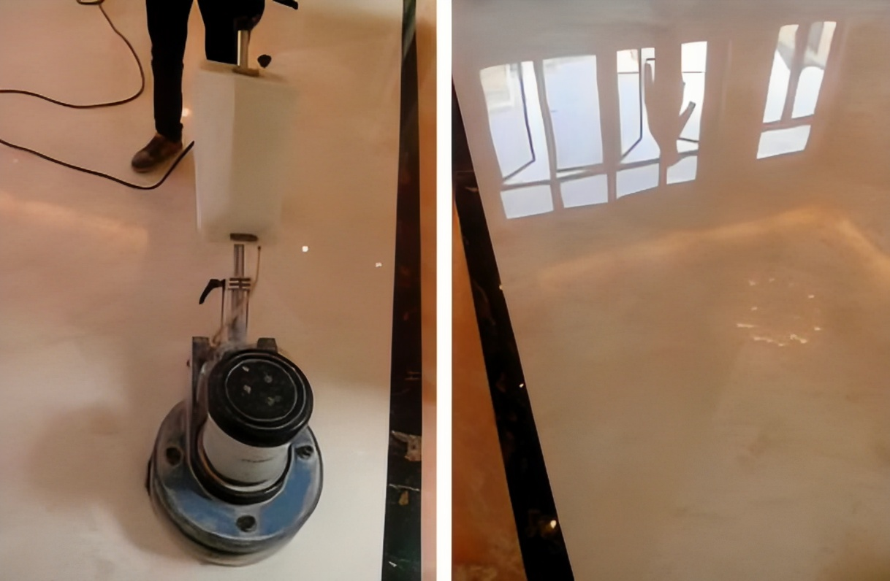

大理石地面的养护方法是什么？
-
1．地层干燥除了以自然阴干的方式去除表面湿气外，还能运用红外线灯加热帮助烘干接缝处的深藏水渍。
-
2．填补隙缝选择黏接性佳、无粉粒、能够防水以及可研磨抛光的填缝材料，同时填补面应平均且与石材平面齐平。
-
3．整平研磨采取研磨方式磨去石材表面的变色层，呈现出石材的原有底色。可搭配不同研磨工具，应付不同渗透程度。
-
4．锈黄去除针对锈斑严重的地方，先用钢丝棉去除表面浮锈，再以大理石专 用除锈剂进行深层除锈。
大理石地面要怎么做保养？
一、大理石保养分为两种：打蜡和再结晶
-
1、先说打蜡，对大理石打蜡抛光确实是一种行之有效的保养方法，但是这种大理石保养弊端很多。
-
（1）腊面吸灰，处理后的地面容易产生一种灰蒙蒙的感觉，而且行人过后会留下清晰的脚印。
-
（2）腊层封闭了大理石的毛孔，大理石内部的湿气不能透出，导致大理石出现病变。
-
（3）腊层质地较软，容易受到磨损，不能真正达到保护大理石的要求。
-
2、再结晶处理，对大理石进行再结晶处理是比较流行的一种大理石保养方法，大理石再结晶分为两个部分，一部分是指机械工具部分，另一部分是专 用化学材料部分；化学材料也又为两种：一种是花岗石再结晶，另一类是大理石再结晶。石材结晶的基本原理是将一些专 用化学材料借助机械磨擦时产生的热量，与大理石表层的结构产生结合反应，产生新的坚硬的结晶层，使用这些石材再结晶系统对花岗石和大理石保养，可以使大理石地面得到光亮清新自然的效果。还能提高大理石表面的耐磨程度，使其光泽更持久。一般情况，花岗石地面两年作一次这样的保养就可以了。但大理石地面由于质地的差异，一般需要6个月左右就要做一次这样的保养，但具体也要看大理石表面磨损的程度而定。
操作方法：
-
1、将稀释好的石材清洗液倒入洗地机内，从后向前进，按直线行走，这样可避免遗漏。
-
2、擦洗同时启动吸水机，边擦洗边吸除污水，对洗地机无法洗到的地方可用拖把泡清洁剂拧干后擦洗。
-
3、用清洁剂清洗一遍吸干地面污水后，按同样用清水再洗一遍，吸干水分即可完成。
-
4、注意事项：清洁地面禁止使用酸性清洁剂和粉状清洁剂，否则会损伤和腐蚀大理石表面。
-
5、标准：干净透亮、无污迹、无印痕。
- 